/* sohrab-hura - proofs */
12 plates. Deterministic overlays rendered by the composition-analysis skill.
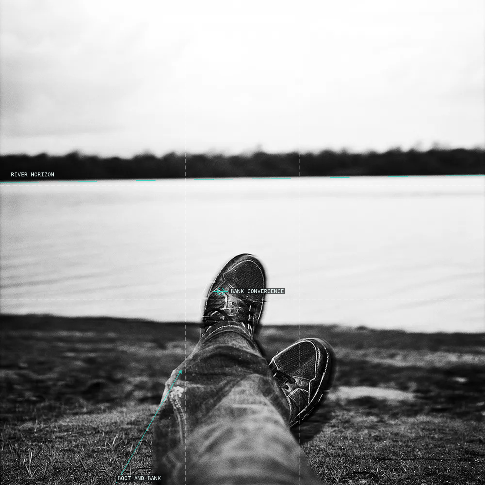
01 Boot, bank, water, and distant treeline resolve into stacked bands.
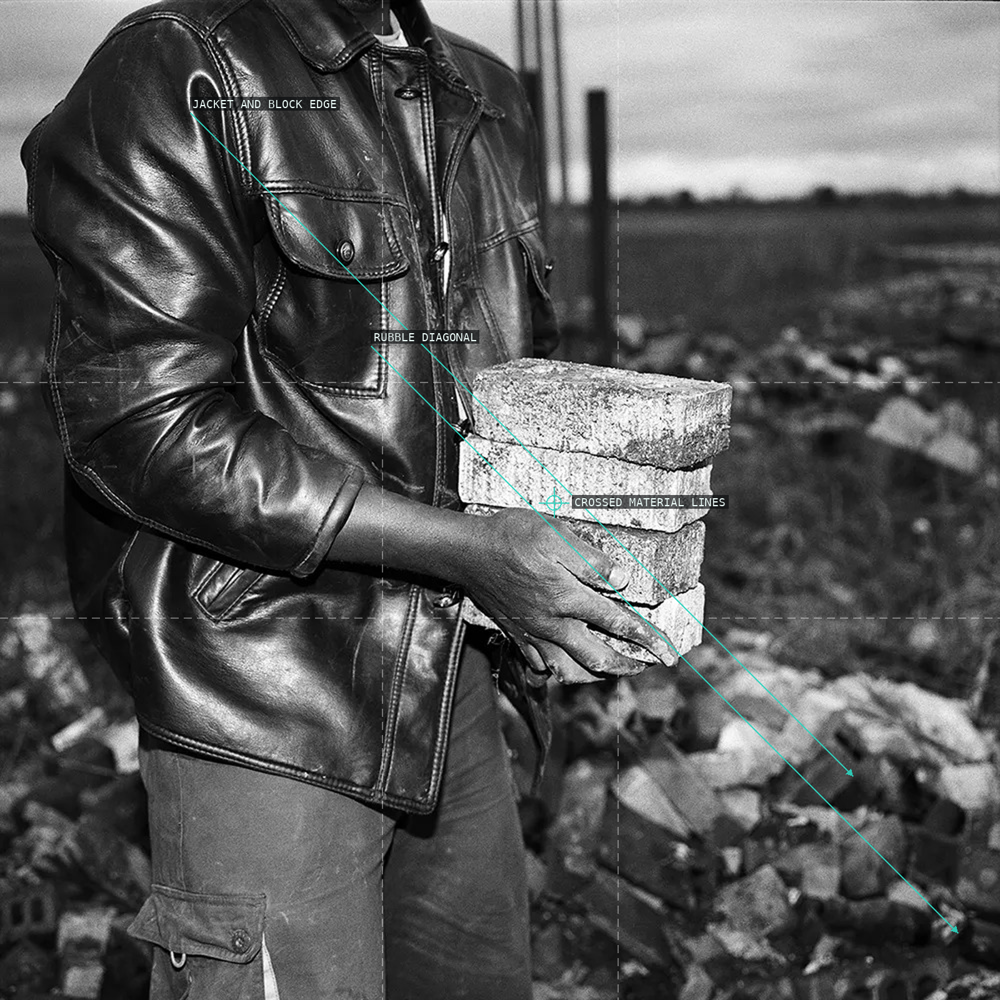
02 Jacket, hand, bricks, and rubble cross in a flash-lit material field.
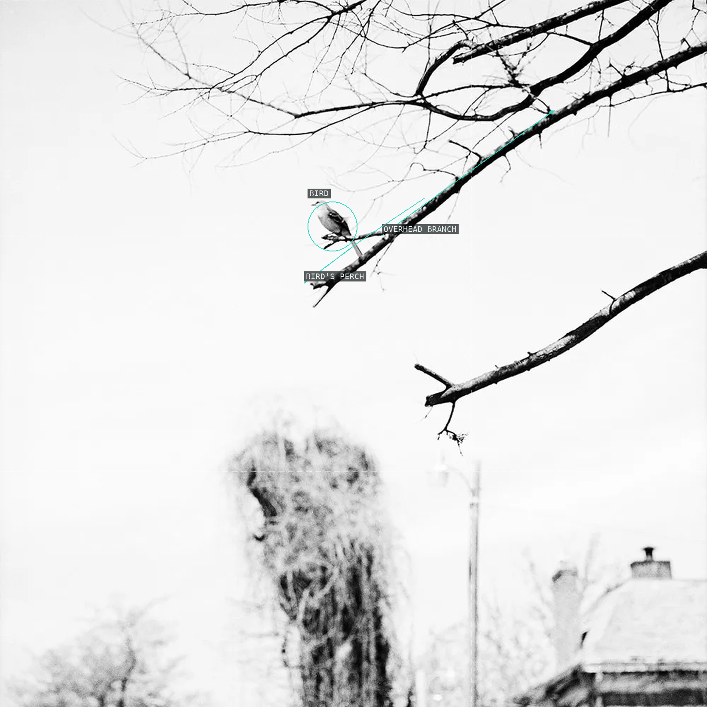
03 A bird's perch crosses a deliberately near-empty field.
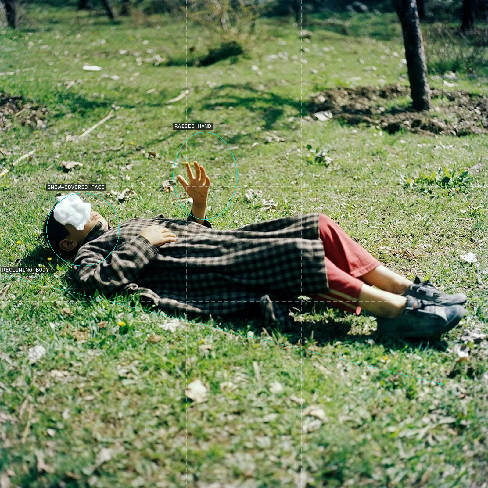
04 A raised hand and covered face interrupt a reclined diagonal.
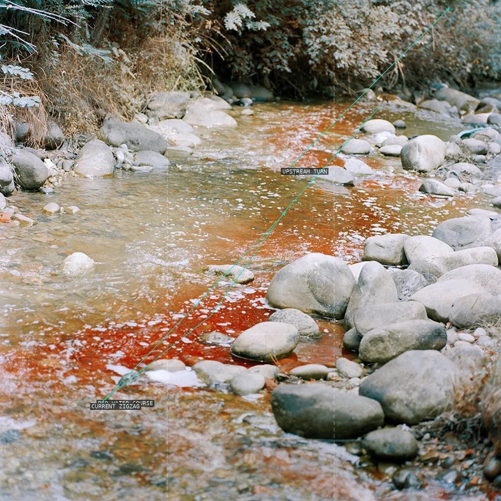
05 Red water zigzags between irregular stone forms.
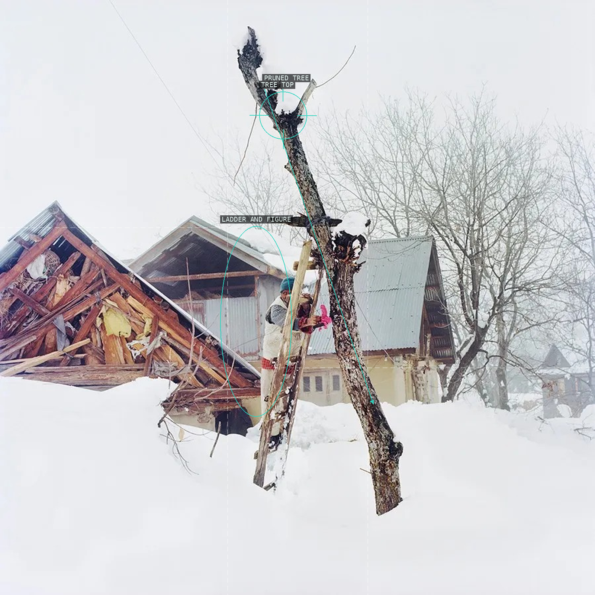
06 A pruned tree, ladder, and figure puncture the snow field.
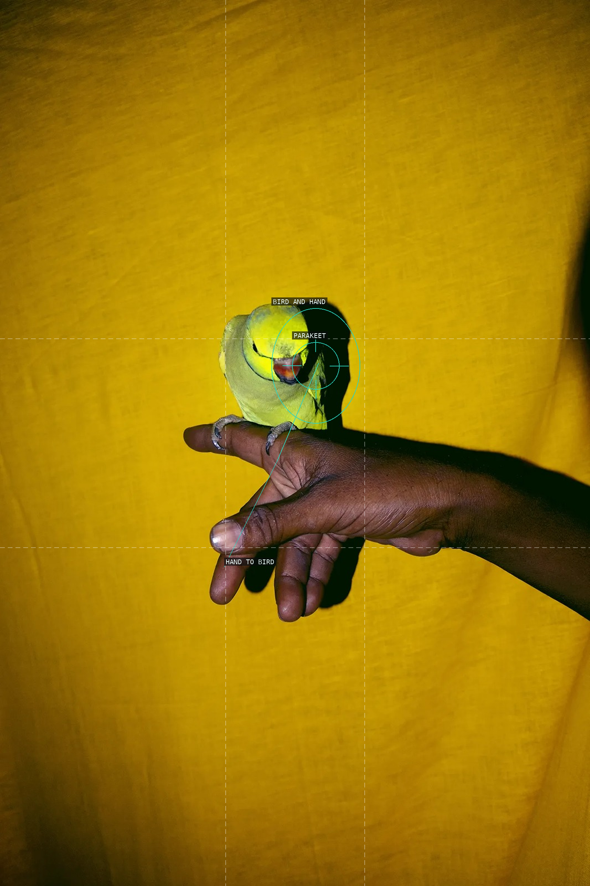
07 A parakeet and hand become a small, doubled event on yellow.
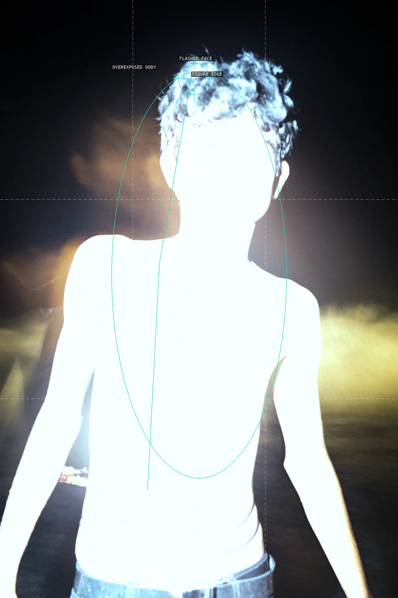
08 Direct flash makes the body flare against surrounding black.
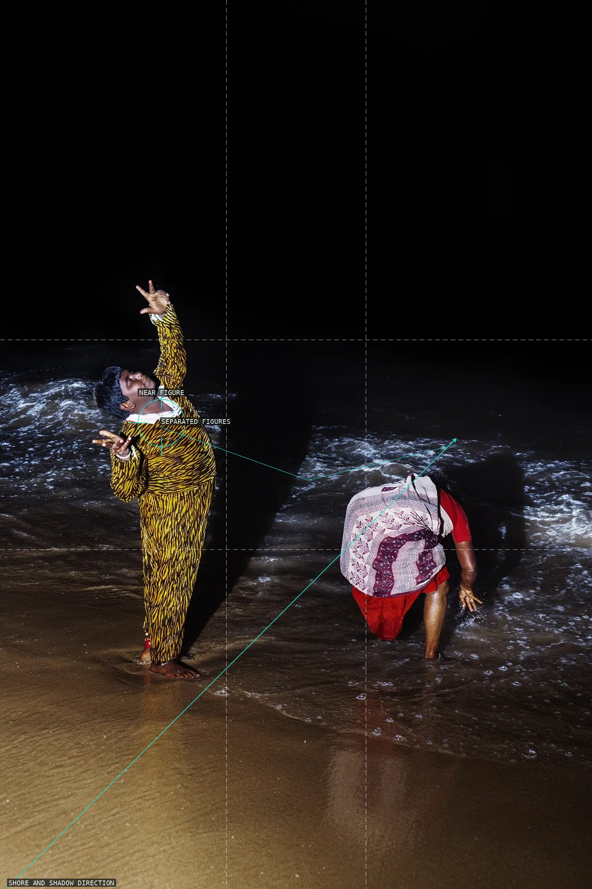
09 Separated figures and shadow turn the shore into a stage.
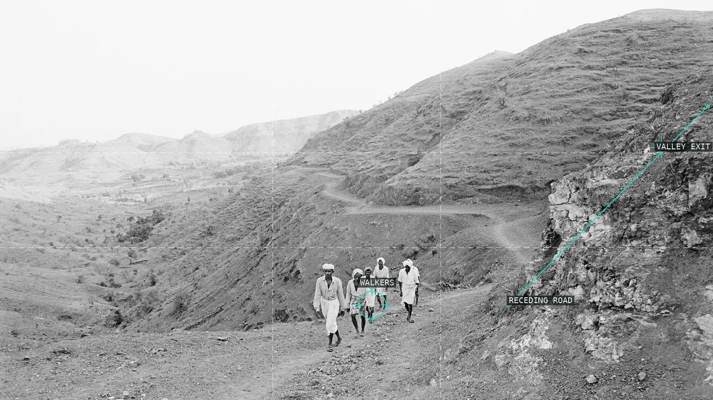
10 A receding route turns walkers into a measure of the valley.
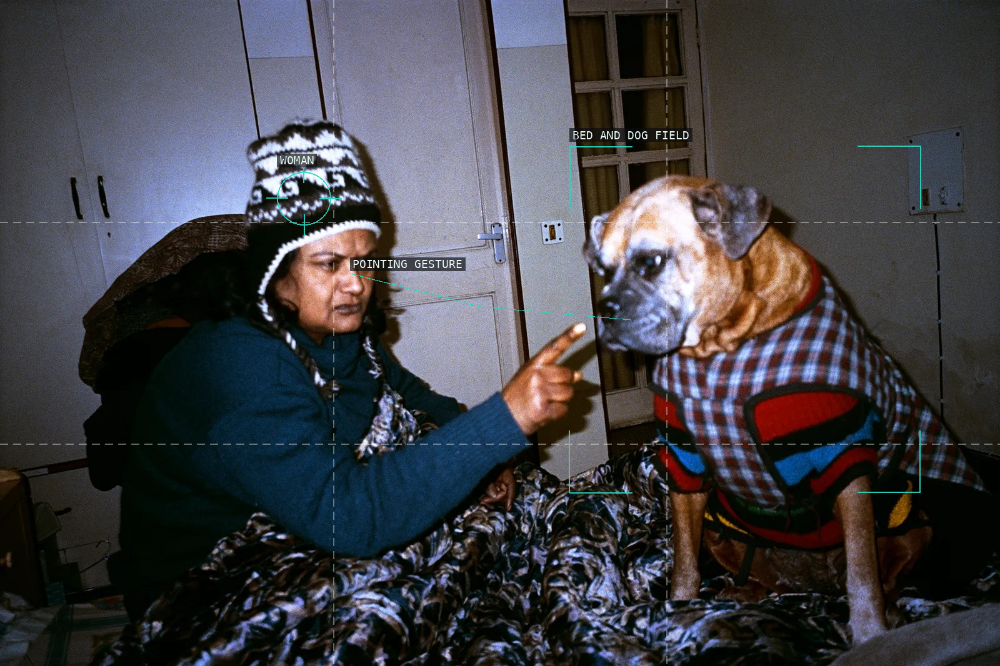
11 A pointed finger turns a room into a relation between woman and dog.
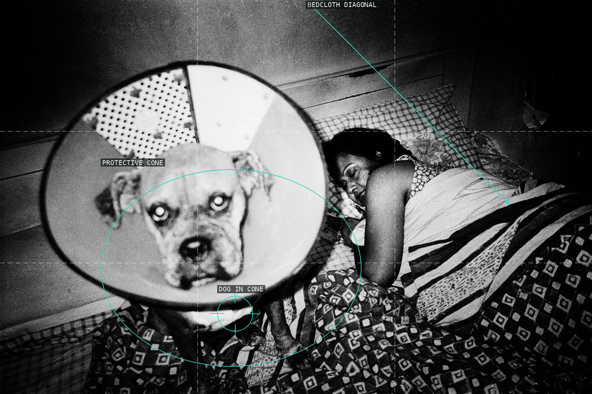
12 The protective cone frames a dog before a sleeping figure.